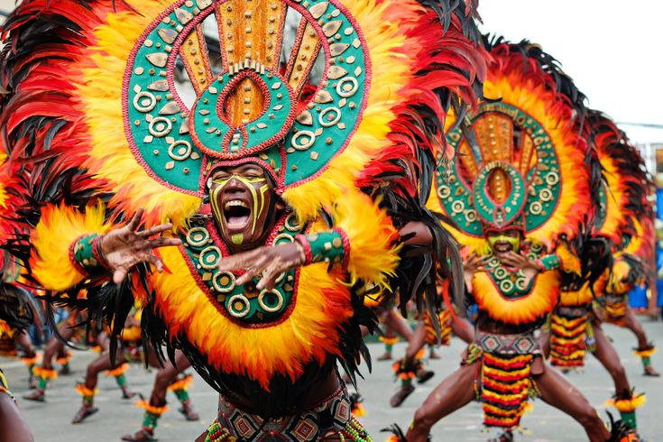
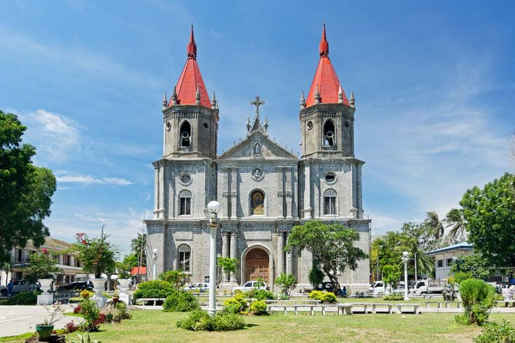

Institutional record
The story behind Bahandi
History, stories, and cultural identity of Molo, Iloilo City, held on an interactive platform that keeps heritage, community memory, and the present in one register.
About the project
A digital heritage initiative

Project Bahandi
Project Bahandi: An Interactive Showcase of Heritage and Identity of Molo, Iloilo City, Philippines is a digital heritage platform built to show and keep the cultural identity of the Molo district.
It offers learners and visitors a way to move through historical landmarks, culinary arts, notable figures, oral traditions, and community memories.
Through digital mapping and storytelling, heritage study becomes a working experience: users find the values and memories behind Molo’s cultural assets.
District note
Molo: history and culture
Molo is one of the historic districts of Iloilo City, known for its part in the cultural and economic development of the province.
During the Spanish colonial period, Molo became an important trading center where cultures mixed. Historical structures, ancestral houses, culinary traditions, and community stories still mark the district’s identity.
Today the heritage of Molo remains active through the people who keep, share, and assign meaning to its cultural resources.
Working definition
Heritage is made by people
Heritage is a social and cultural process where people actively create and shape heritage based on the values, meanings, and importance they assign to objects, places, and traditions.
Kurmo Konsa, 2013
Molo’s cultural heritage is not only its landmarks and food. It is also the people who recognize and sustain those elements.
Through Project Bahandi, students and visitors take part in that process by exploring, documenting, and interpreting Molo’s cultural resources on the interactive digital map.
Mandate
Project goals
| No. | Aim | Scope |
|---|---|---|
| 01 | Showcase cultural heritage | Present Molo through landmarks, traditions, culinary roots, figures, and local history on one platform. |
| 02 | Preserve cultural knowledge | Document sites, oral histories, recipes, and community stories for later generations. |
| 03 | Encourage student participation | Invite students into heritage work through digital tools, game elements, and community research. |
| 04 | Promote heritage awareness | Show that heritage is still being shaped through shared memory, meaning, and local care. |
Credits
Project team
Project proposers, INHS-STVEP
Keion Enzo C. Gendrala
Proposer
John Paul M. Balboa
Proposer
Cybele Faith B. Arroyo
Proposer
Reylen Angela N. Guillano
Proposer
Adviser
Rio G. Castanares Jr.
School Principal
Delorah Cecilia L. Fantillo
Institution
Iloilo National High School - STVEP